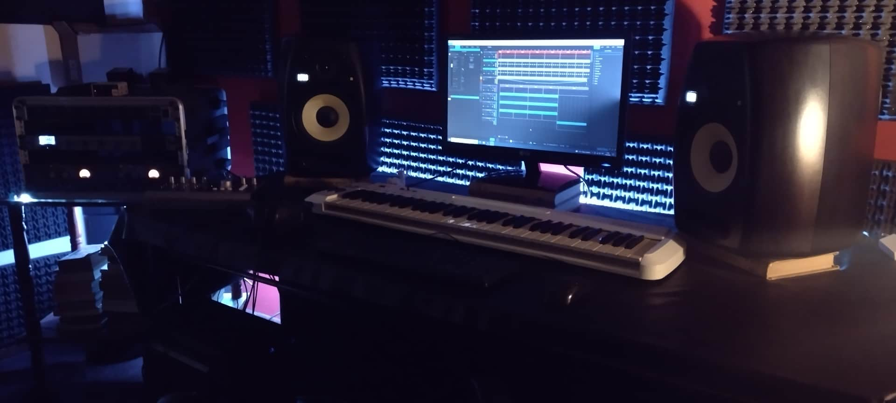

Germán Lucero
Productor músical e ingeniero de mezcla.

Surfónico
Espacio de creación músical.

Germán Lucero
Músico multi-instrumentista
Mi nombre es Germán Lucero. Soy músico multi-instrumentista, compositor e ingeniero de mezcla con mas de 10 años de experiencia.
Puedo convertir una idea o proyecto que involucre sonido y/o música en un producto de carácter profesional e inspirador llevándolo a su máximo potencial. Entre los servicios que ofrezco se encuentran:
- Producción musical para bandas y solistas.
- Mezcla y masterización de audio.
- EDM, Pop, Rock, Blues, Folk, House, Reggaeton, Trap, Hip hop, Reggae, R&B.
- Diseño de sonido y musicalización para cine y videojuegos.
- Edición de podcast.
- Afinación de voces.
- Jingle publicitario.
Si estás interesado en alguno de los servicios que puedo ofrecer no dudes en ponerte en contacto para coordinar el trabajo.